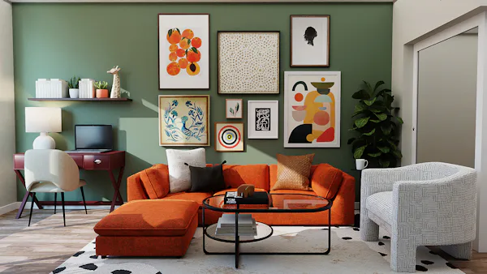

Freshwater Fish
High-yield species like Tilapia and Carp cultivated in our closed-loop Recirculating Aquaculture Systems (RAS).
- Water Type: Freshwater
- Growth Rate: Fast (6-8 months)
- Diet: Plant-based formulation

Marine Fish
Premium ocean species such as Atlantic Salmon and Seabass raised in controlled offshore smart-pens.
- Water Type: Saltwater
- Growth Rate: Moderate (12-18 months)
- Diet: High-protein marine feed
Shrimp
Vannamei and Tiger prawns farmed in highly biosecure, zero-exchange biofloc systems to prevent disease.
- Water Type: Brackish
- Growth Rate: Very Fast (3-4 months)
- Diet: Biofloc & micro-pellets

Crab
Mud crabs and blue swimmer crabs grown in individual compartmentalized tech-boxes to ensure high survival rates.
- Water Type: Estuarine / Brackish
- Growth Rate: Moderate (6-10 months)
- Diet: Mollusks & formulated feed

Shellfish
Oysters, mussels, and clams acting as natural bio-filters in our integrated multi-trophic aquaculture setups.
- Water Type: Marine / Estuarine
- Growth Rate: Slow (18-24 months)
- Diet: Filter feeding (phytoplankton)

Ornamental Fish
Vibrant Koi, Discus, and marine ornamentals bred using precise genetic selection and pristine water conditions.
- Water Type: Varies (Fresh/Salt)
- Growth Rate: Species dependent
- Diet: Specialized color-enhancing